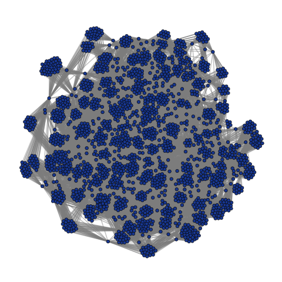

For this project a graph G was created, with artists as nodes, and link inbetween them if they performed at Coachella at the same stage, the same year. The graph G is visualized above.
For the network analysis, the average degree of each node was found. The maximum and the minimum degree was found as well, where the degree represents the number of links that each node has. In our case, this represents how many other aritsts that peformed on the same stage, the same year. The average artist degree, the max degree and the min degree that were found made sense. Some artist only performed once, and are therefore only linked to the artists from that specific year, on that specific stage/tent. Some artist however, or at least one, have performed several times, and are therefore linked to all the artists for all the stages they have perfomed at, for all years. The average degree suggests that the artists in the network are of moderate degree, and relatively few artists have a higher degree of connectivity. This degree analysis was implemented partly to assure that the network was created in the correct way, since it was known beforehand approximately how many artists that repeatedly performed at Coachella. Moreover, it is interesting to conclude from this that is is less common to perform several times, then to repeatedly perform. This was also confirmed by a degree distribution plot. The average degree of the network was 31.51. The maximum degree was 180 and the minimum degree was 6.
The number of connected components was conducted to see if the graph is connected. It could have been so that one group of artists, that performed on some stage one year would create a disconnected component from the other artists, if no artists out of these performed several times. However, it was found that this was not the case. The number of connected components in the graph was one.
In addition, community detection with the package “Community” was executed, and then the communitites from best_partition were analysed to see if any patterns in genre, year or stages were found. When analysing the best_partition communities, no visible patterns could be found with this analysis. The genres, years and stages are mixed in all 24 communities found. This is because the algorithm for finding the best partition optimizes the modularity coefficient, and the modularity coefficients for partitions based on genres, years or stages respectively, are not as high as for the communities from best_partition. The modularity coefficient for the best_partition communities is 0.72, which implies a strong partition structure. This analysis part was implemented to see if the inbuilt model best_partition could find communities based on any of the attributes that were added to the graph.
We wanted to analyse the artists that performed on Coachella several times, and their potential change in popularity over the years. This was done by analysing the tents/stages they performed at, more specifically the Coachella Stage, which is considered the main stage, versus all the other stages. There were 151 artists that performed at Coachella more than 2 times from 1999 to 2023. From the analysis one can conclude that 44 out of these 151 artists started out on the non main stages, and eventually proceeded to the Coachella stage. 7 artists performed on the Coachella stage all times, and 7 artists started out on the Coachella stage on their first peformance, and then regressed to another stage. When looking more into detail to the artists and their respective stages, one can tell that some very popular artists (as David Guetta for example) never performed on the Cochella Stage despite this popularity. This means that this is not a perfect way of measuring popularity. This analysis is limited to only taken into account the first and the last stage they performed at (if they did not always perform at the Coachella Stage). That is another limitation with using this specific way of measuring popularity.
Furthermore, we wanted to analyse whether the artists that repeatedly performed often are the most popular ones or not. This was done by finding their popularity score, which is found from Spotify APIs and is based on the populatiy of their songs. Then, the artist that performed more frequently were computed (the same 151 artists as above). Subsequently, the intersection of these two sets of artist were found. A conclusion is that 22 popular artists performed at Coachella several tiems. This means that the remaining 129 artists that performed several times are not, by our standards, are rather unpopular.